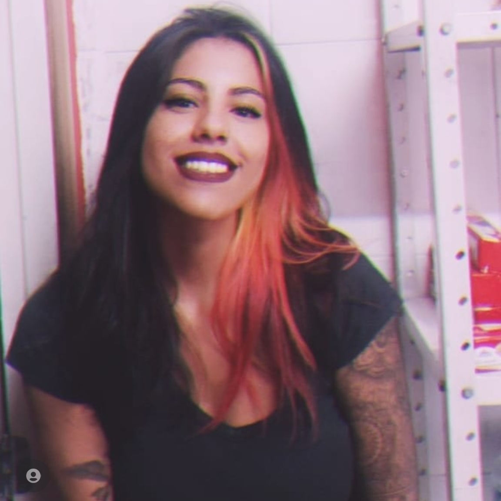

Mônica Pontes
Dev Frontend Júnior/ Marketing e mídias sociais


Sobre
Oi! meu nome é Mônica Pontes, seja bem-vindo(a)!
Sou uma pessoa apaixonada por conhecimento. Sempre tive o sonho de trabalhar com algo que me fizesse superar desafios. Estou sempre em busca de me conectar com pessoas, de ensinar e aprender e de conhecer um mundo novo!
A vida é feita de conexões e experiências!
Gamer ávida, tatuadora por hobbie biker por lazer e saúde.